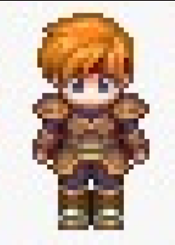
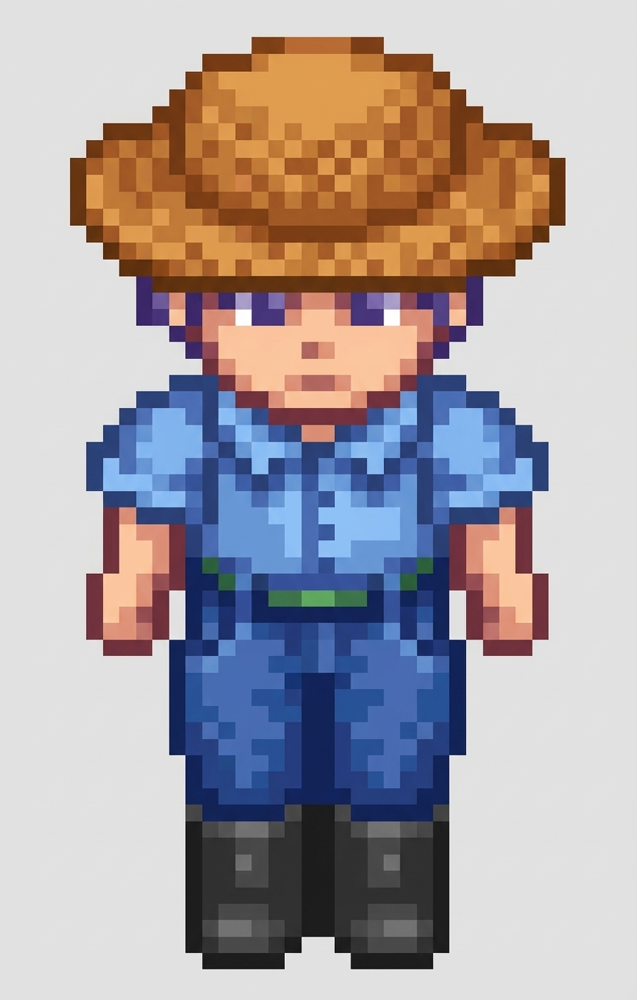
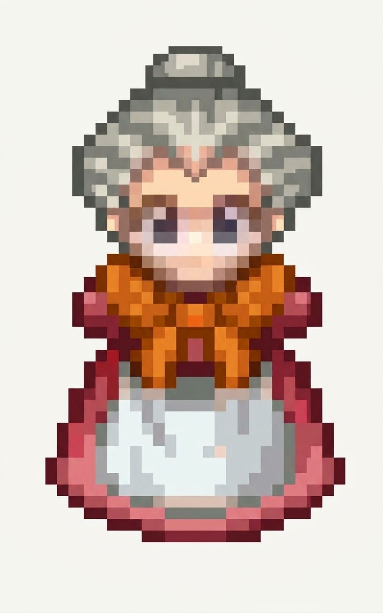
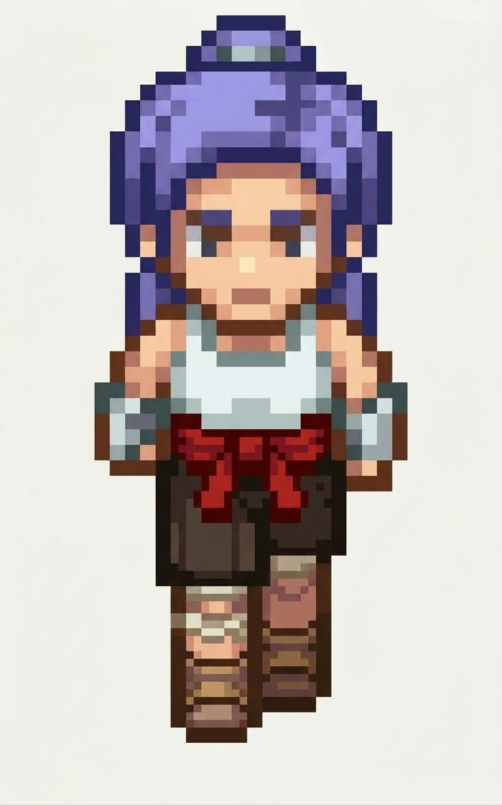

Personajes del Juego
Conoce cada personaje del juego y su aporte
Liam (El Joven Viajero)
Protagonista principal comprometido con la conservación ambiental y la recolección de residuos.

Imagen próximamente
Fernando(Agricultor del pueblo)
Personaje que se encuentra en el parque el cual nos guia a nuestra aventura por Moniquira.

Imagen próximamente
Violeta(comerciante del pueblo)
Comerciante del pueblo la cual nos da las indicaciones para completar la mision de la plaza.

Imagen próximamente
Eva(Pesacadora)
Ella nos pedira ayuda con los lugares cercanos al puente que se encuntran obstruidos por la basura.

Imagen próximamente